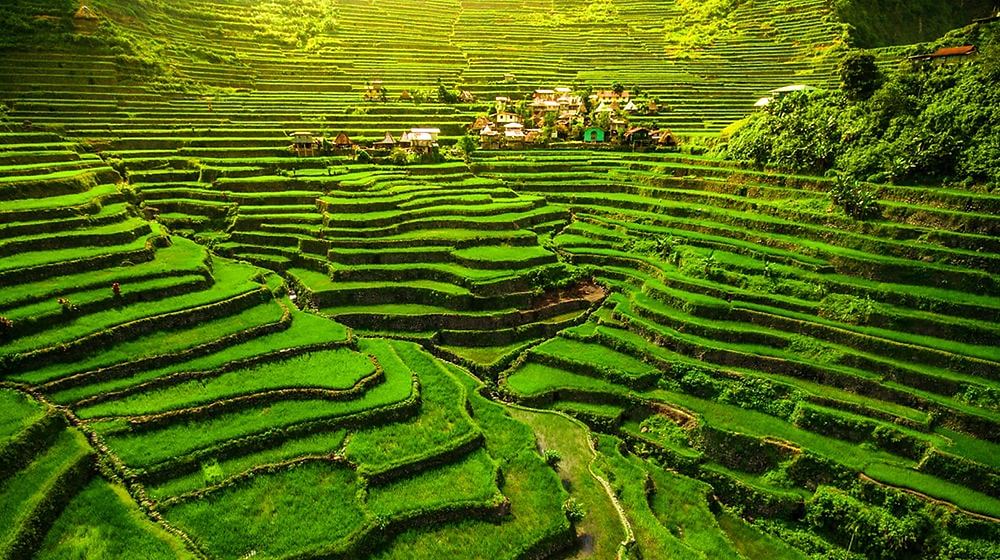
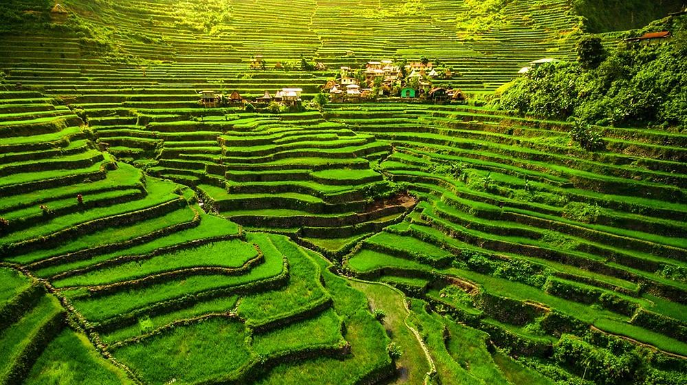
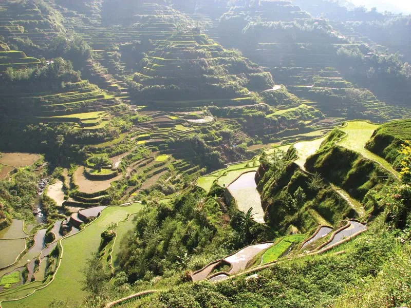
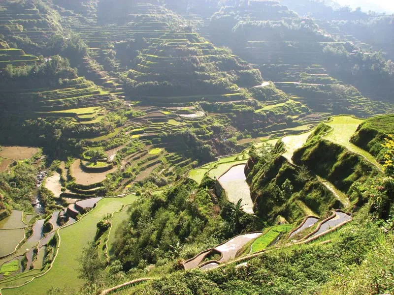

Macli-ing Dulag:
One of the CAR Heroes


The Cordillera Administrative Region, or CAR, is a mountainous area located in the northern part of Luzon, Philippines. It was officially established in 1987 through Executive Order No. 220 to promote regional development and preserve the rich cultural heritage of the highland communities. The region is composed of six provinces Abra, Apayao, Benguet, Ifugao, Kalinga, and Mountain Province and one chartered city, Baguio City, which serves as the regional center.
CAR is known for its breathtaking landscapes, cool climate, and diverse natural resources. It is often called the “Watershed Cradle of North Luzon” because many major rivers originate from its forested mountains. The region is home to stunning tourist attractions such as the Banaue Rice Terraces, Mount Pulag, and the hanging coffins of Sagada.
The Cordillera is also recognized for its rich cultural identity. Various indigenous groups such as the Ifugao, Kankanaey, Ibaloi, Kalinga, and Tingguian have preserved their traditions, crafts, and community values. Their practices reflect deep respect for nature and strong unity among people.
Today, the region continues to grow through agriculture, mining, and tourism. It is famous for its highland vegetables, Benguet coffee, and handwoven fabrics. With Baguio City as a major hub for education and trade, the Cordillera Administrative Region remains a symbol of cultural pride, natural beauty, and resilience in the Philippines.

 

 
